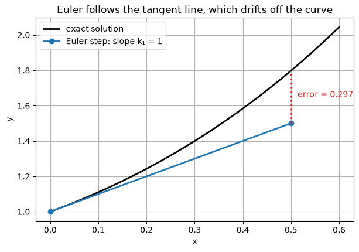
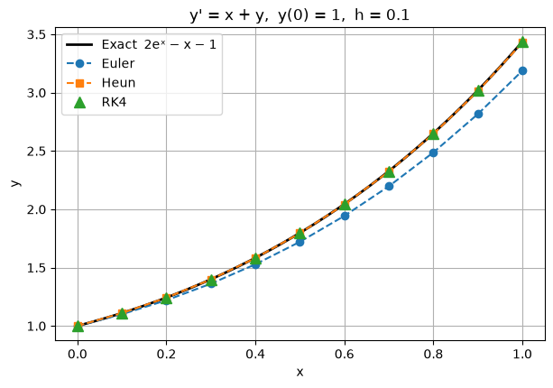
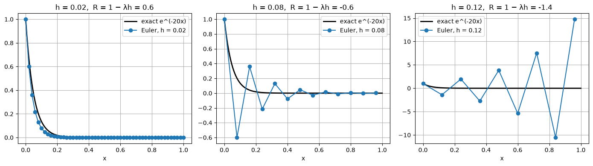
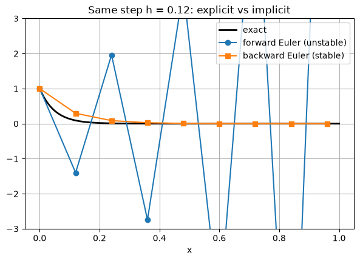
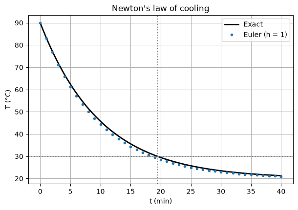

Code
import numpy as np
import matplotlib.pyplot as plt
plt.rcParams["figure.figsize"] = (7, 4.5)
plt.rcParams["axes.grid"] = True
np.set_printoptions(precision=6, suppress=True)Notes with worked examples: analytical methods (separable, linear, exact), direction fields, numerical methods (Euler, Heun, RK4), and applications.
Contents 1. Definitions and initial value problems 2. Direction fields 3. Separable equations 4. Linear equations (integrating factor) 5. Exact equations 6. Numerical methods: Euler, Heun (improved Euler), Runge–Kutta 4 — derivations and worked examples 7. Error, order and efficiency (including Richardson error estimates) 8. Stability and stiff equations 9. Numerical methods in practice: adaptive step size, choosing a method, pitfalls 10. Applications: Newton’s law of cooling, logistic growth 11. An equation with no elementary solution 12. Summary 13. Exercises
import numpy as np
import matplotlib.pyplot as plt
plt.rcParams["figure.figsize"] = (7, 4.5)
plt.rcParams["axes.grid"] = True
np.set_printoptions(precision=6, suppress=True)A first-order ordinary differential equation (ODE) relates an unknown function \(y(x)\) to its first derivative:
\[\frac{dy}{dx} = f(x, y).\]
An initial value problem (IVP) adds a starting condition:
\[\frac{dy}{dx} = f(x, y), \qquad y(x_0) = y_0.\]
Existence and uniqueness (Picard’s theorem). If \(f\) and \(\partial f/\partial y\) are continuous in a rectangle containing \((x_0, y_0)\), the IVP has exactly one solution on some interval around \(x_0\).
Example where uniqueness fails: \(y' = 3y^{2/3}\), \(y(0)=0\). Both \(y = 0\) and \(y = x^3\) are solutions, because \(\partial f/\partial y = 2y^{-1/3}\) is not continuous at \(y = 0\).
At every point \((x, y)\) the equation gives the slope \(f(x,y)\) of the solution curve passing through it. Drawing short line segments with these slopes produces a direction (slope) field. Solution curves follow the arrows.
Below is the field for \(y' = x - y\), with a few solution curves. The exact solution is \(y = x - 1 + Ce^{-x}\), so every curve approaches the line \(y = x - 1\).
def direction_field(f, xlim, ylim, n=21, ax=None):
# Draw normalised slope segments of y' = f(x, y).
ax = ax or plt.gca()
X, Y = np.meshgrid(np.linspace(*xlim, n), np.linspace(*ylim, n))
S = f(X, Y)
L = np.sqrt(1 + S**2)
ax.quiver(X, Y, 1 / L, S / L, angles="xy", color="gray",
headwidth=0, headlength=0, headaxislength=0, pivot="middle")
ax.set_xlim(xlim); ax.set_ylim(ylim)
ax.set_xlabel("x"); ax.set_ylabel("y")
return ax
f = lambda x, y: x - y
ax = direction_field(f, (-1, 4), (-3, 4))
x = np.linspace(-1, 4, 200)
for C in [-3, -1, 0, 1, 3]:
ax.plot(x, x - 1 + C * np.exp(-x), lw=2, label=f"C = {C}")
ax.plot(x, x - 1, "k--", label="y = x - 1")
ax.set_title("Direction field of y' = x - y")
ax.legend(loc="upper left");
An equation is separable if it can be written as
\[\frac{dy}{dx} = g(x)\,h(y).\]
Method: separate the variables and integrate both sides:
\[\int \frac{dy}{h(y)} = \int g(x)\,dx + C.\]
Solve \(\dfrac{dy}{dx} = xy\), \(y(0) = 1\).
Check: \(y' = x e^{x^2/2} = xy\). ✓ Numerically, \(y(1) = e^{0.5} \approx 1.648721\).
Solve \(\dfrac{dy}{dx} = \dfrac{x^2}{1 + y}\), \(y(0) = 0\).
At \(x = 1\): \(y = -1 + \sqrt{5/3} \approx 0.290994\).
x = np.linspace(0, 2, 200)
fig, axes = plt.subplots(1, 2, figsize=(11, 4))
direction_field(lambda x, y: x * y, (0, 2), (0, 8), ax=axes[0])
axes[0].plot(x, np.exp(x**2 / 2), "C0", lw=2)
axes[0].set_title("Example 3.1: y' = xy, y = exp(x²/2)")
direction_field(lambda x, y: x**2 / (1 + y), (0, 2), (0, 2), ax=axes[1])
axes[1].plot(x, -1 + np.sqrt(1 + 2 * x**3 / 3), "C1", lw=2)
axes[1].set_title("Example 3.2: y' = x²/(1+y)")
plt.tight_layout()
print("Example 3.1 y(1) =", np.exp(0.5))
print("Example 3.2 y(1) =", -1 + np.sqrt(5 / 3))Example 3.1 y(1) = 1.6487212707001282
Example 3.2 y(1) = 0.2909944487358056
Standard form:
\[\frac{dy}{dx} + P(x)\,y = Q(x).\]
Method (integrating factor):
Solve \(y' + y = x\), \(y(0) = 1\).
\[\boxed{y = x - 1 + 2e^{-x}}\]
Solve \(x y' + 2y = 4x^2\), \(y(1) = 2\), for \(x > 0\).
\[\boxed{y = x^2 + \frac{1}{x^2}}\]
xs = np.array([0.0, 0.5, 1.0, 1.5, 2.0])
print("Example 4.1: y = x - 1 + 2e^(-x)")
print(f"{'x':>6} {'y(x)':>12}")
for xi in xs:
print(f"{xi:6.2f} {xi - 1 + 2 * np.exp(-xi):12.6f}")
xs = np.array([1.0, 1.5, 2.0, 3.0])
print("\nExample 4.2: y = x^2 + 1/x^2")
print(f"{'x':>6} {'y(x)':>12}")
for xi in xs:
print(f"{xi:6.2f} {xi**2 + 1 / xi**2:12.6f}")Example 4.1: y = x - 1 + 2e^(-x)
x y(x)
0.00 1.000000
0.50 0.713061
1.00 0.735759
1.50 0.946260
2.00 1.270671
Example 4.2: y = x^2 + 1/x^2
x y(x)
1.00 2.000000
1.50 2.694444
2.00 4.250000
3.00 9.111111An equation \(M(x,y)\,dx + N(x,y)\,dy = 0\) is exact if
\[\frac{\partial M}{\partial y} = \frac{\partial N}{\partial x}.\]
Then there is a potential function \(F(x,y)\) with \(F_x = M\) and \(F_y = N\), and the solution is \(F(x, y) = C\).
Solve \((2xy + 3)\,dx + (x^2 - 1)\,dy = 0\), \(y(0) = 2\).
\[\boxed{y = \frac{-2 - 3x}{x^2 - 1} = \frac{3x + 2}{1 - x^2}}, \qquad -1 < x < 1.\]
At \(x = 0.5\): \(y = 3.5 / 0.75 \approx 4.666667\).
# Check example 5.1 by verifying that F(x, y(x)) stays equal to C = -2
y = lambda x: (3 * x + 2) / (1 - x**2)
F = lambda x, y: x**2 * y + 3 * x - y
for xi in [0.0, 0.25, 0.5, 0.75]:
print(f"x = {xi:4.2f} y = {y(xi):9.6f} F(x, y) = {F(xi, y(xi)):.6f}")x = 0.00 y = 2.000000 F(x, y) = -2.000000
x = 0.25 y = 2.933333 F(x, y) = -2.000000
x = 0.50 y = 4.666667 F(x, y) = -2.000000
x = 0.75 y = 9.714286 F(x, y) = -2.000000Most ODEs have no closed-form solution, but we can still compute one approximately. Instead of finding a function \(y(x)\), a numerical method computes numbers \(y_0, y_1, y_2, \dots\) that approximate \(y\) on a grid
\[x_n = x_0 + nh, \qquad n = 0, 1, 2, \dots\]
where \(h\) is the step size. Every method in this notebook is a one-step method: it uses only the current point \((x_n, y_n)\) and the slope function \(f\) to produce the next point \(y_{n+1}\).
The starting point for all of them is the ODE written in integral form. Integrating \(y' = f(x, y)\) from \(x_n\) to \(x_{n+1}\) gives the exact relation
\[y(x_{n+1}) = y(x_n) + \int_{x_n}^{x_{n+1}} f\big(x, y(x)\big)\,dx.\]
The integral is the only part we cannot compute exactly, because \(y(x)\) inside it is unknown. Each method is a different way of approximating that integral, that is, of estimating the average slope over one step:
\[y_{n+1} = y_n + h \times (\text{estimate of the average slope on } [x_n, x_{n+1}]).\]
| Method | Average slope estimated by | Like the quadrature rule |
|---|---|---|
| Euler | slope at the left end | left rectangle rule |
| Heun | mean of the slopes at both ends | trapezoidal rule |
| RK4 | weighted mean of slopes at the start, midpoint (twice) and end | Simpson’s rule |
Throughout this section we use one test problem whose exact solution is known, so every error can be measured:
\[y' = x + y, \qquad y(0) = 1, \qquad \text{exact solution } y = 2e^{x} - x - 1.\]
f = lambda x, y: x + y
exact = lambda x: 2 * np.exp(x) - x - 1Derivation from the Taylor series. Expand the exact solution about \(x_n\):
\[y(x_n + h) = y(x_n) + h\,y'(x_n) + \frac{h^2}{2}\,y''(\xi), \qquad \xi \in (x_n, x_{n+1}).\]
Since \(y'(x_n) = f(x_n, y_n)\), dropping the \(h^2\) term gives Euler’s method:
\[\boxed{y_{n+1} = y_n + h\,f(x_n, y_n)}\]
Geometric meaning. From the current point, walk along the tangent line for a distance \(h\). Because the solution curve bends away from its tangent, each step lands slightly off the curve. The next step then starts from the wrong point, on a neighbouring solution curve, so the errors build up.
Algorithm 1. Start with \(x_0, y_0\), step size \(h\) and number of steps \(N\). 2. For \(n = 0, 1, \dots, N-1\): * compute the slope \(k = f(x_n, y_n)\) * set \(y_{n+1} = y_n + hk\) and \(x_{n+1} = x_n + h\).
def euler(f, x0, y0, h, n):
x, y = np.zeros(n + 1), np.zeros(n + 1)
x[0], y[0] = x0, y0
for i in range(n):
y[i + 1] = y[i] + h * f(x[i], y[i])
x[i + 1] = x[i] + h
return x, y| \(n\) | \(x_n\) | \(y_n\) | slope \(f(x_n, y_n) = x_n + y_n\) | \(y_{n+1} = y_n + 0.1 \times \text{slope}\) | exact \(y(x_{n+1})\) | error |
|---|---|---|---|---|---|---|
| 0 | 0.0 | 1.000000 | 1.000000 | 1.100000 | 1.110342 | 0.0103 |
| 1 | 0.1 | 1.100000 | 1.200000 | 1.220000 | 1.242806 | 0.0228 |
| 2 | 0.2 | 1.220000 | 1.420000 | 1.362000 | 1.399718 | 0.0377 |
The error grows every step, because each step starts from an already inaccurate value and adds a new error of its own.
\[\text{global error} \approx N \cdot O(h^2) = \frac{b - x_0}{h}\,O(h^2) = O(h).\]
A method whose global error is \(O(h^p)\) is said to have order \(p\). Euler has order 1, so halving \(h\) only halves the error. Gaining one more correct digit costs 10 times as many steps.
# Geometric picture: one large Euler step (h = 0.5) so the gap is visible
h = 0.5
xf = np.linspace(0, 0.6, 100)
plt.plot(xf, exact(xf), "k", lw=2, label="exact solution")
k1 = f(0, 1)
plt.plot([0, h], [1, 1 + h * k1], "C0o-", lw=2, label=f"Euler step: slope k₁ = {k1:g}")
plt.vlines(h, 1 + h * k1, exact(h), colors="C3", linestyles=":", lw=2)
plt.annotate(f"error = {exact(h) - (1 + h*k1):.3f}", (h, (1 + h*k1 + exact(h)) / 2),
xytext=(8, 0), textcoords="offset points", color="C3")
plt.title("Euler follows the tangent line, which drifts off the curve")
plt.xlabel("x"); plt.ylabel("y"); plt.legend();
Derivation from the trapezoidal rule. Estimate the integral with the trapezoidal rule, which averages the slopes at both ends of the step:
\[y_{n+1} = y_n + \frac{h}{2}\Big[f(x_n, y_n) + f(x_{n+1}, y_{n+1})\Big].\]
The problem is that \(y_{n+1}\) appears on both sides (the formula is implicit). Heun’s fix is to first predict \(y_{n+1}\) with an Euler step and then correct it with the trapezoidal average. That makes it a predictor–corrector method:
\[ \begin{aligned} k_1 &= f(x_n, y_n) && \text{slope at the start}\\ y^{*}_{n+1} &= y_n + h k_1 && \text{predictor (an Euler step)}\\ k_2 &= f(x_{n+1}, y^{*}_{n+1}) && \text{slope at the predicted end point}\\ y_{n+1} &= y_n + \tfrac{h}{2}(k_1 + k_2) && \text{corrector: use the average slope} \end{aligned} \]
Why it is better. If the curve is concave up, the start slope \(k_1\) is too small and the end slope \(k_2\) is too large, so their average largely cancels the error. The local error becomes \(O(h^3)\) and the global error \(O(h^2)\), so Heun is order 2. Halving \(h\) divides the error by about 4. Each step costs 2 evaluations of \(f\).
def heun(f, x0, y0, h, n):
x, y = np.zeros(n + 1), np.zeros(n + 1)
x[0], y[0] = x0, y0
for i in range(n):
k1 = f(x[i], y[i])
k2 = f(x[i] + h, y[i] + h * k1)
y[i + 1] = y[i] + h / 2 * (k1 + k2)
x[i + 1] = x[i] + h
return x, y| \(n\) | \(x_n\) | \(y_n\) | \(k_1 = x_n + y_n\) | \(y^{*} = y_n + 0.1k_1\) | \(k_2 = x_{n+1} + y^{*}\) | \(y_{n+1} = y_n + 0.05(k_1 + k_2)\) | error |
|---|---|---|---|---|---|---|---|
| 0 | 0.0 | 1.000000 | 1.000000 | 1.100000 | 1.200000 | 1.110000 | 0.00034 |
| 1 | 0.1 | 1.110000 | 1.210000 | 1.231000 | 1.431000 | 1.242050 | 0.00076 |
| 2 | 0.2 | 1.242050 | 1.442050 | 1.386255 | 1.686255 | 1.398465 | 0.00125 |
After three steps the error is \(0.00125\), about 30 times smaller than Euler’s \(0.0377\), for twice the work.
Derivation from Simpson’s rule. Simpson’s rule weights the midpoint four times as heavily as the ends:
\[\int_{x_n}^{x_{n+1}} f\,dx \approx \frac{h}{6}\Big[f_{\text{start}} + 4 f_{\text{mid}} + f_{\text{end}}\Big].\]
RK4 estimates the midpoint slope twice, each time more accurately than the last, and splits the weight \(4\) into \(2 + 2\):
\[ \begin{aligned} k_1 &= f(x_n,\ y_n) && \text{slope at the start}\\ k_2 &= f\!\left(x_n + \tfrac{h}{2},\ y_n + \tfrac{h}{2}k_1\right) && \text{slope at the midpoint, reached using } k_1\\ k_3 &= f\!\left(x_n + \tfrac{h}{2},\ y_n + \tfrac{h}{2}k_2\right) && \text{slope at the midpoint, reached using the better } k_2\\ k_4 &= f\!\left(x_n + h,\ y_n + h k_3\right) && \text{slope at the end, reached using } k_3\\[4pt] y_{n+1} &= y_n + \tfrac{h}{6}\big(k_1 + 2k_2 + 2k_3 + k_4\big) \end{aligned} \]
The weights \(\tfrac{1}{6}, \tfrac{2}{6}, \tfrac{2}{6}, \tfrac{1}{6}\) add up to 1, so \(\tfrac{1}{6}(k_1 + 2k_2 + 2k_3 + k_4)\) is a weighted average slope. The local error is \(O(h^5)\) and the global error \(O(h^4)\): RK4 is order 4, and halving \(h\) divides the error by about 16. Each step costs 4 evaluations of \(f\).
def rk4(f, x0, y0, h, n):
x, y = np.zeros(n + 1), np.zeros(n + 1)
x[0], y[0] = x0, y0
for i in range(n):
k1 = f(x[i], y[i])
k2 = f(x[i] + h / 2, y[i] + h / 2 * k1)
k3 = f(x[i] + h / 2, y[i] + h / 2 * k2)
k4 = f(x[i] + h, y[i] + h * k3)
y[i + 1] = y[i] + h / 6 * (k1 + 2 * k2 + 2 * k3 + k4)
x[i + 1] = x[i] + h
return x, y| stage | evaluation point \((x, y)\) | slope |
|---|---|---|
| \(k_1\) | \((0,\ 1)\) | \(1\) |
| \(k_2\) | \((0.05,\ 1 + 0.05 \cdot 1) = (0.05,\ 1.05)\) | \(1.1\) |
| \(k_3\) | \((0.05,\ 1 + 0.05 \cdot 1.1) = (0.05,\ 1.055)\) | \(1.105\) |
| \(k_4\) | \((0.1,\ 1 + 0.1 \cdot 1.105) = (0.1,\ 1.1105)\) | \(1.2105\) |
\[y_1 = 1 + \frac{0.1}{6}\big(1 + 2(1.1) + 2(1.105) + 1.2105\big) = 1 + \frac{0.1}{6}(6.6205) = 1.1103417.\]
Exact: \(y(0.1) = 1.1103418\). The error is \(1.7 \times 10^{-7}\), about 60,000 times smaller than Euler’s first step.
Below, one large step (\(h = 0.5\)) from \((0, 1)\) shows where each method samples the slope. Short arrows mark each sampled slope; the coloured line is the step actually taken.
h, x0, y0 = 0.5, 0.0, 1.0
xf = np.linspace(0, 0.55, 100)
def slope_mark(ax, x, y, s, color, label=None):
d = 0.06
ax.plot([x - d, x + d], [y - d * s, y + d * s], color=color, lw=3, label=label)
ax.plot(x, y, "o", color=color, ms=5)
fig, axes = plt.subplots(1, 3, figsize=(14, 4.2), sharey=True)
for ax in axes:
ax.plot(xf, exact(xf), "k", lw=2, label="exact")
ax.set_xlabel("x")
axes[0].set_ylabel("y")
# Euler
k1 = f(x0, y0)
y_e = y0 + h * k1
slope_mark(axes[0], x0, y0, k1, "C0", "k₁")
axes[0].plot([x0, h], [y0, y_e], "C0--")
axes[0].set_title(f"Euler: 1 slope\ny₁ = {y_e:.4f}, error {exact(h) - y_e:.4f}")
# Heun
k2 = f(x0 + h, y0 + h * k1)
y_h = y0 + h / 2 * (k1 + k2)
slope_mark(axes[1], x0, y0, k1, "C0", "k₁ (start)")
slope_mark(axes[1], x0 + h, y0 + h * k1, k2, "C1", "k₂ (predicted end)")
axes[1].plot([x0, h], [y0, y_h], "C2--", label="average slope")
axes[1].set_title(f"Heun: 2 slopes\ny₁ = {y_h:.4f}, error {exact(h) - y_h:.4f}")
# RK4
r1 = f(x0, y0)
r2 = f(x0 + h / 2, y0 + h / 2 * r1)
r3 = f(x0 + h / 2, y0 + h / 2 * r2)
r4 = f(x0 + h, y0 + h * r3)
y_r = y0 + h / 6 * (r1 + 2 * r2 + 2 * r3 + r4)
slope_mark(axes[2], x0, y0, r1, "C0", "k₁")
slope_mark(axes[2], x0 + h / 2, y0 + h / 2 * r1, r2, "C1", "k₂")
slope_mark(axes[2], x0 + h / 2, y0 + h / 2 * r2, r3, "C4", "k₃")
slope_mark(axes[2], x0 + h, y0 + h * r3, r4, "C3", "k₄")
axes[2].plot([x0, h], [y0, y_r], "C2--", label="weighted average")
axes[2].set_title(f"RK4: 4 slopes\ny₁ = {y_r:.4f}, error {exact(h) - y_r:.5f}")
for ax in axes:
ax.legend(loc="upper left", fontsize=8)
plt.tight_layout()
print(f"exact y(0.5) = {exact(h):.6f}")exact y(0.5) = 1.797443
For the test problem, the exact solution after one step from \((0, 1)\) has the Taylor series
\[y(h) = 2e^{h} - h - 1 = 1 + h + h^2 + \frac{h^3}{3} + \frac{h^4}{12} + \frac{h^5}{60} + \cdots\]
Expanding each method’s formula for one step, symbolically in \(h\):
| Method | One step gives | First term missed (local error) | Predicted at \(h=0.1\) | Actual |
|---|---|---|---|---|
| Euler | \(1 + h\) | \(h^2\) | \(1.0 \times 10^{-2}\) | \(1.03 \times 10^{-2}\) |
| Heun | \(1 + h + h^2\) | \(h^3/3\) | \(3.3 \times 10^{-4}\) | \(3.42 \times 10^{-4}\) |
| RK4 | \(1 + h + h^2 + \frac{h^3}{3} + \frac{h^4}{12}\) | \(h^5/60\) | \(1.7 \times 10^{-7}\) | \(1.69 \times 10^{-7}\) |
(For RK4: \(k_1 = 1\), \(k_2 = 1 + h\), \(k_3 = 1 + h + \tfrac{h^2}{2}\), \(k_4 = 1 + 2h + h^2 + \tfrac{h^3}{2}\); substituting gives the expression in the table.)
This is the real meaning of order: a method of order \(p\) reproduces the Taylor series of the true solution through the \(h^p\) term. The first term it misses, of size \(h^{p+1}\), is the local error. Over \(1/h\) steps these add up to a global error of \(h^p\).
h, n = 0.1, 10
x, ye = euler(f, 0, 1, h, n)
_, yh = heun(f, 0, 1, h, n)
_, yr = rk4(f, 0, 1, h, n)
yx = exact(x)
print(f"{'x':>5} {'Euler':>10} {'Heun':>10} {'RK4':>12} {'Exact':>12} "
f"{'|err| Eul':>10} {'|err| Heun':>10} {'|err| RK4':>10}")
for i in range(n + 1):
print(f"{x[i]:5.1f} {ye[i]:10.6f} {yh[i]:10.6f} {yr[i]:12.8f} {yx[i]:12.8f} "
f"{abs(ye[i]-yx[i]):10.2e} {abs(yh[i]-yx[i]):10.2e} {abs(yr[i]-yx[i]):10.2e}") x Euler Heun RK4 Exact |err| Eul |err| Heun |err| RK4
0.0 1.000000 1.000000 1.00000000 1.00000000 0.00e+00 0.00e+00 0.00e+00
0.1 1.100000 1.110000 1.11034167 1.11034184 1.03e-02 3.42e-04 1.69e-07
0.2 1.220000 1.242050 1.24280514 1.24280552 2.28e-02 7.56e-04 3.75e-07
0.3 1.362000 1.398465 1.39971699 1.39971762 3.77e-02 1.25e-03 6.21e-07
0.4 1.528200 1.581804 1.58364848 1.58364940 5.54e-02 1.85e-03 9.15e-07
0.5 1.721020 1.794894 1.79744128 1.79744254 7.64e-02 2.55e-03 1.26e-06
0.6 1.943122 2.040857 2.04423592 2.04423760 1.01e-01 3.38e-03 1.68e-06
0.7 2.197434 2.323147 2.32750325 2.32750541 1.30e-01 4.36e-03 2.16e-06
0.8 2.487178 2.645578 2.65107913 2.65108186 1.64e-01 5.50e-03 2.73e-06
0.9 2.815895 3.012364 3.01920283 3.01920622 2.03e-01 6.84e-03 3.39e-06
1.0 3.187485 3.428162 3.43655949 3.43656366 2.49e-01 8.40e-03 4.17e-06xf = np.linspace(0, 1, 200)
plt.plot(xf, exact(xf), "k", lw=2, label="Exact 2eˣ − x − 1")
plt.plot(x, ye, "o--", label="Euler")
plt.plot(x, yh, "s--", label="Heun")
plt.plot(x, yr, "^", ms=8, label="RK4")
plt.title("y' = x + y, y(0) = 1, h = 0.1")
plt.xlabel("x"); plt.ylabel("y"); plt.legend();
If the global error is \(E(h) \approx Ch^{p}\), then
\[\frac{E(h)}{E(h/2)} \approx 2^{p}, \qquad \log E \approx \log C + p\log h.\]
So the order can be read off in two ways: from the error ratio when \(h\) is halved, or from the slope of a log–log plot of error against \(h\).
| Method | Order \(p\) | Error ratio when \(h\) is halved |
|---|---|---|
| Euler | 1 | ≈ 2 |
| Heun | 2 | ≈ 4 |
| RK4 | 4 | ≈ 16 |
We check this for the test problem by measuring the error at \(x = 1\) (exact value \(2e - 2 \approx 3.436564\)).
hs = [0.2, 0.1, 0.05, 0.025, 0.0125]
methods = {"Euler": euler, "Heun": heun, "RK4": rk4}
cost_per_step = {"Euler": 1, "Heun": 2, "RK4": 4}
errors = {name: [] for name in methods}
for h in hs:
n = round(1 / h)
for name, method in methods.items():
_, y = method(f, 0, 1, h, n)
errors[name].append(abs(y[-1] - exact(1.0)))
print(f"{'h':>8}" + "".join(f"{m:>14}{'ratio':>8}" for m in methods))
for i, h in enumerate(hs):
row = f"{h:8.4f}"
for name in methods:
e = errors[name]
ratio = f"{e[i-1] / e[i]:8.2f}" if i else f"{'':>8}"
row += f"{e[i]:14.3e}{ratio}"
print(row)
for name, p in zip(methods, [1, 2, 4]):
slope = np.polyfit(np.log(hs), np.log(errors[name]), 1)[0]
print(f"{name:6s} observed order ≈ {slope:.2f} (theory {p})") h Euler ratio Heun ratio RK4 ratio
0.2000 4.599e-01 3.115e-02 6.138e-05
0.1000 2.491e-01 1.85 8.402e-03 3.71 4.169e-06 14.73
0.0500 1.300e-01 1.92 2.182e-03 3.85 2.716e-07 15.35
0.0250 6.644e-02 1.96 5.558e-04 3.93 1.733e-08 15.67
0.0125 3.359e-02 1.98 1.403e-04 3.96 1.095e-09 15.83
Euler observed order ≈ 0.95 (theory 1)
Heun observed order ≈ 1.95 (theory 2)
RK4 observed order ≈ 3.95 (theory 4)Smaller steps are not free. The real cost of a method is the number of times it evaluates \(f\): \(N\) for Euler, \(2N\) for Heun and \(4N\) for RK4. A fair comparison plots the error against that cost.
fig, axes = plt.subplots(1, 2, figsize=(12, 4.2))
for name in methods:
axes[0].loglog(hs, errors[name], "o-", label=name)
evals = [cost_per_step[name] * round(1 / h) for h in hs]
axes[1].loglog(evals, errors[name], "o-", label=name)
axes[0].invert_xaxis()
axes[0].set_xlabel("step size h"); axes[0].set_ylabel("|error| at x = 1")
axes[0].set_title("Error vs step size (slope = order)")
axes[1].set_xlabel("number of f evaluations"); axes[1].set_ylabel("|error| at x = 1")
axes[1].set_title("Error vs work")
for ax in axes:
ax.legend()
plt.tight_layout()
# Work needed for an error of 1e-6, using E ≈ C h^p from the finest run
for name, p in zip(methods, [1, 2, 4]):
evals = cost_per_step[name] * round(1 / hs[-1])
need = evals * (errors[name][-1] / 1e-6) ** (1 / p)
print(f"{name:6s} needs about {need:12,.0f} evaluations of f for error 1e-6")Euler needs about 2,687,502 evaluations of f for error 1e-6
Heun needs about 1,895 evaluations of f for error 1e-6
RK4 needs about 58 evaluations of f for error 1e-6
Takeaway. In the right-hand plot, RK4’s line lies far below the others: for any fixed amount of work it is far more accurate. To reach an error of \(10^{-6}\), Euler needs about 2.7 million evaluations of \(f\), Heun about 1,900 and RK4 about 60. Higher-order methods win whenever the solution is smooth.
In real problems there is no exact solution to compare with. Richardson’s idea: solve twice, with step sizes \(h\) and \(h/2\). Since \(E(h) \approx Ch^p\),
\[y(b) - y_{h/2} \approx \frac{y_{h/2} - y_{h}}{2^{p} - 1}.\]
Below we check the estimate against the true error for the test problem.
print(f"{'method':>6} {'y_h':>12} {'y_h/2':>12} {'estimated err':>14} {'true err':>12} {'extrapolated':>13} {'its err':>10}")
for name, p in [("Euler", 1), ("Heun", 2), ("RK4", 4)]:
method = methods[name]
_, y1 = method(f, 0, 1, 0.1, 10)
_, y2 = method(f, 0, 1, 0.05, 20)
est = (y2[-1] - y1[-1]) / (2**p - 1)
true = exact(1.0) - y2[-1]
extrap = y2[-1] + est
print(f"{name:>6} {y1[-1]:12.8f} {y2[-1]:12.8f} {est:14.3e} {true:12.3e} "
f"{extrap:13.8f} {abs(exact(1.0) - extrap):10.2e}")method y_h y_h/2 estimated err true err extrapolated its err
Euler 3.18748492 3.30659541 1.191e-01 1.300e-01 3.42570590 1.09e-02
Heun 3.42816169 3.43438211 2.073e-03 2.182e-03 3.43645558 1.08e-04
RK4 3.43655949 3.43656339 2.598e-07 2.716e-07 3.43656365 1.18e-08The estimated errors closely match the true errors, so the computed solutions tell you how accurate they are. Extrapolation also helps: the extrapolated Euler value is about 12 times more accurate than the finer Euler run, and the extrapolated RK4 value is accurate to about \(10^{-8}\). This is the standard check in practice: always re-run with half the step size and compare.
Accuracy is not the only concern. A method can also be unstable: for a step that is too large, errors are amplified at every step and the numerical solution blows up, even though the true solution decays.
Take \(y' = -\lambda y\) with \(\lambda > 0\), \(y(0) = 1\). The exact solution \(y = e^{-\lambda x}\) decays to 0. Euler gives
\[y_{n+1} = y_n - h\lambda y_n = (1 - h\lambda)\,y_n \quad\Longrightarrow\quad y_n = (1 - h\lambda)^{n}.\]
\(R = 1 - h\lambda\) is the amplification factor. The numerical solution decays only if \(|R| < 1\), that is
\[\boxed{h < \frac{2}{\lambda}} \quad\text{(Euler's stability limit).}\]
With \(\lambda = 20\) the limit is \(h < 0.1\):
| \(h\) | \(R = 1 - 20h\) | behaviour |
|---|---|---|
| 0.02 | 0.6 | smooth decay, like the exact solution |
| 0.08 | −0.6 | decays, but flips sign every step |
| 0.12 | −1.4 | oscillates and grows without bound |
lam = 20.0
decay = lambda x, y: -lam * y
xf = np.linspace(0, 1, 300)
fig, axes = plt.subplots(1, 3, figsize=(14, 4), sharey=False)
for ax, h in zip(axes, [0.02, 0.08, 0.12]):
n = round(1 / h)
x, y = euler(decay, 0, 1, h, n)
ax.plot(xf, np.exp(-lam * xf), "k", lw=2, label="exact e^(-20x)")
ax.plot(x, y, "o-", label=f"Euler, h = {h}")
ax.set_title(f"h = {h}, R = 1 − λh = {1 - lam*h:.1f}")
ax.set_xlabel("x"); ax.legend()
plt.tight_layout()
Backward (implicit) Euler uses the slope at the end of the step:
\[y_{n+1} = y_n + h\,f(x_{n+1}, y_{n+1}).\]
For the test equation this gives \(y_{n+1} = y_n - h\lambda y_{n+1}\), so
\[y_{n+1} = \frac{y_n}{1 + h\lambda}, \qquad |R| = \frac{1}{1 + h\lambda} < 1 \text{ for every } h > 0.\]
It is unconditionally stable. The price is that, in general, each step requires solving an equation for \(y_{n+1}\), usually with Newton’s method.
An equation is called stiff when stability, not accuracy, forces explicit methods to take tiny steps. This typically happens when the solution has a very fast-decaying part alongside a slow part. Explicit methods (Euler, Heun, RK4) all have a stability limit of the form \(h < c/\lambda\); for RK4 it is \(c \approx 2.79\). For stiff problems, implicit methods are much cheaper overall.
def backward_euler_linear(lam, y0, h, n):
# Backward Euler for y' = -lam * y (the implicit equation solves in closed form)
x = np.arange(n + 1) * h
y = y0 / (1 + h * lam) ** np.arange(n + 1)
return x, y
h = 0.12
x, y_fwd = euler(decay, 0, 1, h, round(1 / h))
_, y_bwd = backward_euler_linear(lam, 1, h, round(1 / h))
plt.plot(xf, np.exp(-lam * xf), "k", lw=2, label="exact")
plt.plot(x, y_fwd, "o-", label="forward Euler (unstable)")
plt.plot(x, y_bwd, "s-", label="backward Euler (stable)")
plt.ylim(-3, 3)
plt.title(f"Same step h = {h}: explicit vs implicit")
plt.xlabel("x"); plt.legend();
A fixed \(h\) wastes effort where the solution is smooth and is too coarse where it changes quickly. Adaptive solvers choose \(h\) step by step:
Professional solvers use the same idea with higher-order pairs: RK45 (Dormand–Prince) in scipy.integrate.solve_ivp, MATLAB’s ode45, or Tsit5 in Julia’s DifferentialEquations.jl.
Example. \(y' = 1 + y^2\), \(y(0) = 0\), with exact solution \(y = \tan x\), which becomes very steep near \(x = \pi/2 \approx 1.571\). We integrate to \(x = 1.5\).
def adaptive_heun(f, x0, y0, x_end, tol=1e-3, h=0.1):
xs, ys = [x0], [y0]
x, y = x0, y0
rejected = 0
while x_end - x > 1e-12:
h = min(h, x_end - x)
k1 = f(x, y)
k2 = f(x + h, y + h * k1)
err = h / 2 * abs(k2 - k1)
allowed = tol * (1 + abs(y))
if err <= allowed:
x, y = x + h, y + h / 2 * (k1 + k2)
xs.append(x); ys.append(y)
else:
rejected += 1
h *= min(2.0, max(0.2, 0.9 * np.sqrt(allowed / err))) if err > 0 else 2.0
return np.array(xs), np.array(ys), rejected
tanf = lambda x, y: 1 + y**2
xa, ya, rej = adaptive_heun(tanf, 0.0, 0.0, 1.5)
print(f"accepted steps: {len(xa) - 1}, rejected: {rej}")
print(f"exact tan(1.5) = {np.tan(1.5):.5f}")
print(f"adaptive Heun: y(1.5) = {ya[-1]:.5f} error = {abs(ya[-1] - np.tan(1.5)):.4f}")
n_fixed = len(xa) - 1
xh, yh_fixed = heun(tanf, 0, 0, 1.5 / n_fixed, n_fixed)
print(f"fixed-step Heun, {n_fixed} steps: y(1.5) = {yh_fixed[-1]:.5f} error = {abs(yh_fixed[-1] - np.tan(1.5)):.4f}")
fig, axes = plt.subplots(1, 2, figsize=(12, 4))
xf = np.linspace(0, 1.5, 300)
axes[0].plot(xf, np.tan(xf), "k", lw=2, label="exact tan x")
axes[0].plot(xa, ya, "o", ms=4, label="adaptive Heun")
axes[0].set_title("Points cluster where the solution is steep")
axes[0].set_xlabel("x"); axes[0].legend()
axes[1].plot(xa[:-1], np.diff(xa), "o-")
axes[1].set_title("Step size chosen by the solver")
axes[1].set_xlabel("x"); axes[1].set_ylabel("h")
plt.tight_layout()accepted steps: 89, rejected: 3
exact tan(1.5) = 14.10142
adaptive Heun: y(1.5) = 14.09386 error = 0.0076
fixed-step Heun, 89 steps: y(1.5) = 13.81361 error = 0.2878
With the same number of steps, the adaptive solver is about 40 times more accurate than fixed steps. It takes large steps where \(\tan x\) is flat and puts its effort near \(x = 1.5\), where the solution is steep.
| Situation | Good choice |
|---|---|
| Learning, or a quick rough look | Euler |
| Smooth, non-stiff problem | RK4 with a fixed step, or adaptive RK45 |
| Solution changes scale a lot | Adaptive step size (RK45, Tsit5) |
| Stiff problem (fast and slow scales) | Implicit method: backward Euler, BDF, Rosenbrock |
The rate of temperature change is proportional to the difference from the surroundings:
\[\frac{dT}{dt} = -k\,(T - T_a).\]
Problem. A cup of coffee at \(90^\circ\)C is placed in a \(20^\circ\)C room with \(k = 0.1\ \text{min}^{-1}\). (a) What is its temperature after 10 minutes? (b) When does it reach \(30^\circ\)C?
The equation is separable (and linear): \(T(t) = T_a + (T_0 - T_a)e^{-kt} = 20 + 70e^{-0.1t}\).
\(T(10) = 20 + 70e^{-1} \approx 20 + 25.752 = 45.75^\circ\)C.
\(20 + 70e^{-0.1t} = 30 \Rightarrow e^{-0.1t} = 1/7 \Rightarrow t = 10\ln 7 \approx 19.46\) min.
k, Ta, T0 = 0.1, 20.0, 90.0
cool = lambda t, T: -k * (T - Ta)
T_exact = lambda t: Ta + (T0 - Ta) * np.exp(-k * t)
t, T_rk = rk4(cool, 0, T0, 1.0, 40) # h = 1 minute
_, T_eu = euler(cool, 0, T0, 1.0, 40)
print(f"T(10) exact = {T_exact(10):.4f} RK4 = {T_rk[10]:.4f} Euler = {T_eu[10]:.4f}")
print(f"time to reach 30 °C = 10 ln 7 = {10 * np.log(7):.4f} min")
tf = np.linspace(0, 40, 200)
plt.plot(tf, T_exact(tf), "k", lw=2, label="Exact")
plt.plot(t, T_eu, ".", label="Euler (h = 1)")
plt.axhline(30, color="gray", ls=":"); plt.axvline(10 * np.log(7), color="gray", ls=":")
plt.xlabel("t (min)"); plt.ylabel("T (°C)"); plt.title("Newton's law of cooling")
plt.legend();T(10) exact = 45.7516 RK4 = 45.7516 Euler = 44.4075
time to reach 30 °C = 10 ln 7 = 19.4591 min
\[\frac{dP}{dt} = rP\left(1 - \frac{P}{K}\right),\]
where \(r\) is the growth rate and \(K\) is the carrying capacity. Separating variables with partial fractions gives
\[P(t) = \frac{K}{1 + \left(\dfrac{K - P_0}{P_0}\right)e^{-rt}}.\]
Problem. \(r = 0.5\) per year, \(K = 1000\), \(P_0 = 100\). Find \(P(5)\).
\[P(5) = \frac{1000}{1 + 9e^{-2.5}} = \frac{1000}{1 + 9(0.082085)} = \frac{1000}{1.738765} \approx 575.1.\]
The equilibria are \(P = 0\) (unstable) and \(P = K\) (stable). Growth is fastest at \(P = K/2\).
r, K, P0 = 0.5, 1000.0, 100.0
logistic = lambda t, P: r * P * (1 - P / K)
P_exact = lambda t: K / (1 + (K - P0) / P0 * np.exp(-r * t))
t, P_rk = rk4(logistic, 0, P0, 0.5, 40)
print(f"P(5) exact = {P_exact(5):.4f} RK4 (h=0.5) = {P_rk[10]:.4f}")
fig, axes = plt.subplots(1, 2, figsize=(11, 4))
tf = np.linspace(0, 20, 200)
axes[0].plot(tf, P_exact(tf), "k", lw=2, label="Exact")
axes[0].plot(t, P_rk, "o", ms=4, label="RK4 (h = 0.5)")
axes[0].axhline(K, color="gray", ls=":"); axes[0].set_title("Logistic growth")
axes[0].set_xlabel("t (years)"); axes[0].set_ylabel("P"); axes[0].legend()
direction_field(logistic, (0, 20), (0, 1400), ax=axes[1])
for p0 in [50, 300, 700, 1300]:
_, Pp = rk4(logistic, 0, p0, 0.1, 200)
axes[1].plot(np.linspace(0, 20, 201), Pp, lw=2)
axes[1].set_title("Solutions approach K = 1000")
plt.tight_layout()P(5) exact = 575.1209 RK4 (h=0.5) = 575.1165
The Riccati equation
\[y' = x^2 + y^2, \qquad y(0) = 0\]
cannot be solved in terms of elementary functions. We estimate \(y(1)\) with RK4 and check the result by repeatedly halving \(h\). When the digits stop changing, the answer has converged.
g = lambda x, y: x**2 + y**2
prev = None
print(f"{'h':>8} {'y(1) RK4':>16} {'change':>12}")
for h in [0.2, 0.1, 0.05, 0.025, 0.0125]:
_, y = rk4(g, 0, 0, h, round(1 / h))
change = f"{abs(y[-1] - prev):12.2e}" if prev is not None else ""
print(f"{h:8.4f} {y[-1]:16.10f} {change}")
prev = y[-1] h y(1) RK4 change
0.2000 0.3502575491
0.1000 0.3502337418 2.38e-05
0.0500 0.3502319725 1.77e-06
0.0250 0.3502318526 1.20e-07
0.0125 0.3502318448 7.79e-09The last two values agree to about 8 significant figures: \(y(1) \approx 0.3502318\). The solution grows quickly afterwards and blows up near \(x \approx 2.003\), a reminder that solutions of nonlinear ODEs can exist only on a finite interval.
| Type | Form | Method |
|---|---|---|
| Separable | \(y' = g(x)h(y)\) | \(\int dy/h = \int g\,dx\) |
| Linear | \(y' + P y = Q\) | Integrating factor \(\mu = e^{\int P}\) |
| Exact | \(M\,dx + N\,dy = 0\), \(M_y = N_x\) | Find \(F\) with \(F_x = M\), \(F_y = N\); then \(F = C\) |
| Anything else | \(y' = f(x,y)\) | Numerical: Euler (order 1), Heun (2), RK4 (4) |
Answers
q = lambda x, y: -2 * x * y
_, y_eu = euler(q, 0, 1, 0.25, 4)
_, y_rk = rk4(q, 0, 1, 0.25, 4)
ex = np.exp(-1)
print(f"Exact y(1) = {ex:.6f}")
print(f"Euler y(1) = {y_eu[-1]:.6f} error = {abs(y_eu[-1] - ex):.2e}")
print(f"RK4 y(1) = {y_rk[-1]:.6f} error = {abs(y_rk[-1] - ex):.2e}")
print(f"Error ratio Euler / RK4 ≈ {abs(y_eu[-1] - ex) / abs(y_rk[-1] - ex):.0f}")Exact y(1) = 0.367879
Euler y(1) = 0.410156 error = 4.23e-02
RK4 y(1) = 0.367934 error = 5.51e-05
Error ratio Euler / RK4 ≈ 768